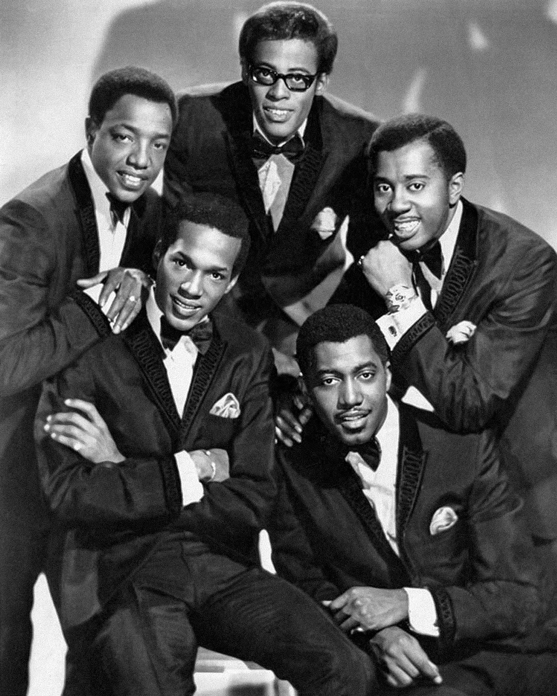

The Temptations were a five-man Detroit vocal group that turned Motown polish into a weapon.
Between 1964 and 1969 they gave Berry Gordy's label two US No. 1 singles and a run of R&B chart-toppers.

Table of Contents
- How The Temptations Formed in Detroit
- David Ruffin and My Girl
- Get Ready, Whitfield and the Hit Run
- Cloud Nine and Psychedelic Soul
- FAQ
How The Temptations Formed in Detroit
The group began in Detroit in 1961 under the name the Elgins.
Otis Williams, Elbridge "Al" Bryant and Melvin Franklin came from a group called the Distants.
Eddie Kendricks and Paul Williams came from the Primes.
Together they auditioned for Motown in March 1961 and were signed to its Miracle label.
A New Name
Berry Gordy learned that another act already used the Elgins name.
The five switched to the Temptations, a name credited to Billy Mitchell, Mickey Stevenson, Otis Williams and Paul Williams.
Their first two singles, "Oh Mother of Mine" and "Check Yourself," had Paul Williams on lead and went nowhere.
"(You're My) Dream Come True," with Kendricks up front, peaked at No. 22 on the R&B chart in May 1962.
Smokey Robinson Steps In
In 1963 Smokey Robinson became their writer and producer.
Their first Robinson single, "I Want a Love I Can See," did not chart.
The group needed a front man with grit, and in January 1964 Bryant was fired and David Ruffin joined.
David Ruffin and My Girl
The Way You Do the Things You Do
Ruffin's arrival changed the group almost at once.
"The Way You Do the Things You Do" reached No. 11 on the Hot 100 and No. 1 on the R&B chart in 1964.
It was their first Top 20 pop hit.
The Making of My Girl
Robinson had seen Ruffin sing a solo spot on tour with the Motortown Revue.
He decided to build a single around that voice.
The song was first meant for the Miracles, but Ruffin's bandmates persuaded Robinson to hand it to The Temptations.
Robinson and Ronald White wrote it.
James Jamerson of the Funk Brothers played the bass intro, and Robert White played the guitar riff.
Otis Williams sang second tenor behind Ruffin.
"My Girl" came out on December 21, 1964, on Gordy Records.
On March 6, 1965, it reached No. 1 on the Hot 100, the group's first pop chart-topper.
It also topped the R&B chart, and it entered the Grammy Hall of Fame in 1998.
In the UK it peaked at No. 43 at first, then hit No. 2 on a 1992 re-release.
The best 60s songs list includes it for good reason.
Get Ready, Whitfield and the Hit Run
Get Ready
"Get Ready" came out on February 7, 1966, with Kendricks singing lead.
Robinson wrote and produced it.
It reached No. 1 on the R&B chart but stalled at No. 29 on the Hot 100.
It did better in Britain, where it peaked at No. 10.
Rare Earth later took their own version to No. 4 on the Hot 100 in 1970.
Enter Norman Whitfield
"Ain't Too Proud to Beg" followed in 1966 and did better than "Get Ready" on the pop chart, reaching No. 13.
After that, Norman Whitfield became the main producer for the group.
"Beauty Is Only Skin Deep" reached No. 3 and "(I Know) I'm Losing You" hit No. 8.
Both were R&B No. 1s.
Their 1965 album "The Temptin' Temptations" reached No. 11 on the Billboard 200 and topped the R&B album chart.
| Single | Year | Hot 100 | R&B |
|---|---|---|---|
| "The Way You Do the Things You Do" | 1964 | No. 11 | No. 1 |
| "My Girl" | 1964 | No. 1 | No. 1 |
| "Get Ready" | 1966 | No. 29 | No. 1 |
| "Ain't Too Proud to Beg" | 1966 | No. 13 | No. 1 |
| "Beauty Is Only Skin Deep" | 1966 | No. 3 | No. 1 |
| "(I Know) I'm Losing You" | 1966 | No. 8 | No. 1 |
| "Cloud Nine" | 1968 | No. 6 | No. 2 |
| "I Can't Get Next to You" | 1969 | No. 1 | No. 1 |
Cloud Nine and Psychedelic Soul
Ruffin Out, Edwards In
Ruffin was fired on June 27, 1968.
Dennis Edwards, formerly of the Contours, was hired the next day.
Melvin Franklin and Paul Williams stayed through the decade.
The Sound Turns Psychedelic
In fall 1968 Whitfield began producing psychedelic-flavored material for the group.
"Cloud Nine" was a Top 10 hit that October and reached No. 6.
It won the Grammy for Best R&B Vocal Group Performance, described as the first Grammy for a Motown act.
"I Can't Get Next to You" followed in 1969 and went to No. 1 on both the pop and R&B charts.
The "Cloud Nine" album reached No. 4 on the Billboard 200 in 1969.
Legacy
"Psychedelic Shack" arrived in 1970 and included the first version of "War."
The Rock and Roll Hall of Fame inducted the group on January 18, 1989.
Hear them beside The Supremes in the Motown, soul and R&B hub.
The group's best years run from 1964 through 1969.
FAQ
Who were The Temptations?
They were a Detroit vocal group signed to Motown.
The group formed in 1961 from two local groups, the Distants and the Primes.
What was the first number one hit by The Temptations?
"My Girl" reached No. 1 on the Billboard Hot 100 on March 6, 1965.
Smokey Robinson and Ronald White wrote it, and David Ruffin sang lead.
Who sang lead on My Girl?
David Ruffin sang lead.
It was the first Temptations single to feature him in that role.
Why did David Ruffin leave the group?
He was fired on June 27, 1968.
Dennis Edwards, formerly of the Contours, was hired the next day.
Are The Temptations in the Rock and Roll Hall of Fame?
Yes.
They were inducted on January 18, 1989.
Five voices, one label and a run of hits made the group a Motown pillar.
The full story sits in Wikipedia's entry on The Temptations.
Back to the 1960smusic.net homepage to explore every genre of the decade.